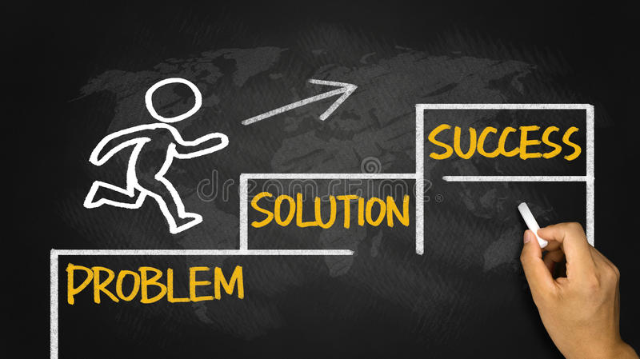

Actions and Solutions
With the right policy choices, we can move the needle on poverty, expand the middle class, and put the Philippines economy on an upward trajectory. Small steps can be taken to better this problem, leading to possible solutions to poverty.Through its strategy, AmBisyon 2040, the Philippine government plans to eradicate extreme poverty by 2040. Furthermore, the government has implemented various programs and reforms to reduce poverty by targeting education, healthcare and the overall economy.
Solutions to combating poverty in the Philippines- Greater Access to Education
- Greater Access to Healthcare:
- Economic Improvement:
- Improve childhood nutrition
- Support environmental programs